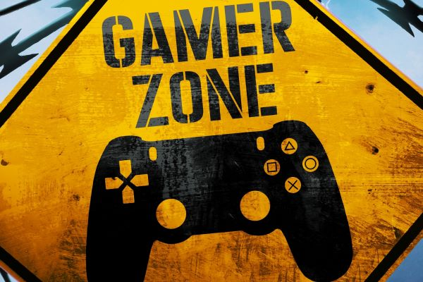

Featured Content
-

Breaking Down the Myths
Learn about the myths and misconceptions surrounding gaming, and why they are not based in reality.
Read More -

Gaming for Mental Health
Discover how video games can be used as a tool to improve mental health and well-being.
Read More -

Gaming and Socialization
Explore the ways in which gaming can help people connect with others and form new social relationships.
Read More